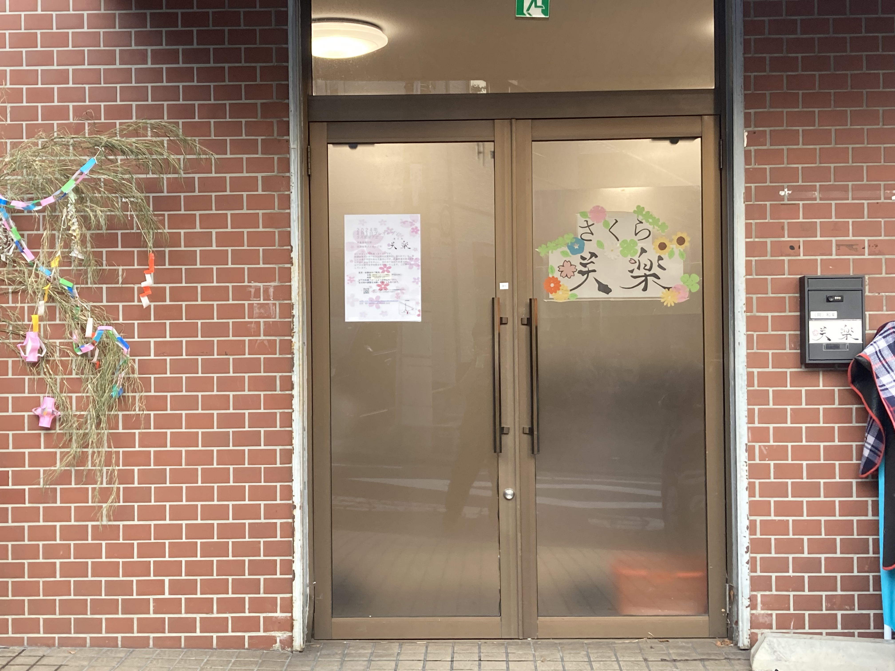

咲楽について
咲楽の理念
子供は「楽しい」ときが「伸びる」とき。 お子様について丁寧にお伺いし、一人一人
に合わせた個別プログラムを作成し取り組みます。 褒めを大切にすることで自信をつ
け、苦手なことにも挑戦したり、自分の世界を広げていけるようお手伝いします。 地
域の方との交流や音楽・食育を通して様々な感性を育てるとともに、社会に出たとき
に必要とされるソーシャルスキル・学習・身辺自立のスキル獲得を支援します。
利用について
・主に府中市にお住まいの方
・受給者証をお持ちの方、取得予定の方
・療育を必要とする年長から小・中・高校までのお子様（5〜18歳）
※ご利用にあたっては、お住まいの市区役所の障害福祉課等に必ずご相談・ご確認く
ださい。
送迎について
必要な方には学校や保育園等から咲楽へ、咲楽からご自宅への送迎を行いますのでお問い合わせください。
利用時間
児童発達支援・放課後等デイサービスともに
平日 14:00〜17:00
学校休業日は検討中
※平日は下校後、咲楽に到着してからのご利用となりますのでお子さまの学年や学校
等により開始時間が異なることがございます。
利用料金
利用料金として負担いただく金額は、世帯所得に応じて上限額が定められています。
ひと月の上限額
非課税世帯0円
世帯所得約900万円まで4600円
世帯所得900万円以上37200円
3〜5歳無料
※上記以外にも、別途以下の費用がかかります。
・食育活動代（毎日ではありません）
・施設内外活動にかかる実費（例:施設入場料やイベント実施費、交通費など）
咲楽の外観
